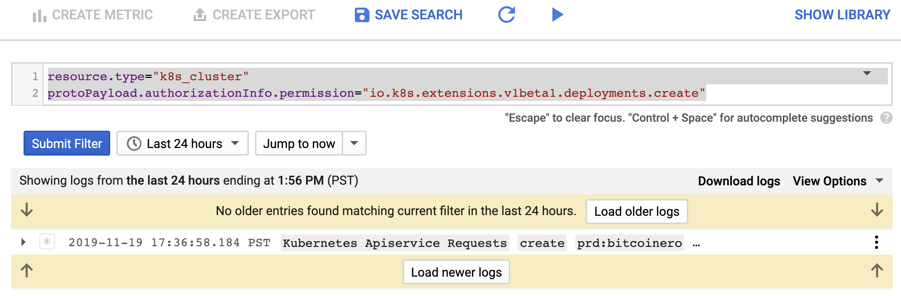

Free Compute: Scenario 1 Defense¶
Backstory¶
Name: Blue¶
- Overworked
- Can only do the bare minimum
- Uses defaults when configuring systems
- Usually gets blamed for stability or security issues
Motivations¶
- Blue gets paged at 1am with an “urgent” problem: the developers say “the website is slow”
- Blue reluctantly agrees to take a “quick look”
- Blue wants desperately to get back to sleep. Zzz
Defense¶
Blue looks at the page with an unsurprising lack of details, and spends a few minutes getting the answer to exactly which website they are referring to that is underperforming. It's "the one running in Kubernetes", they said. Blue leverages their Cloud Shell terminal to begin the process of troubleshooting the issue.
Identifying the Issue¶
The first step is to determine the name for the web application deployment in question. From the terminal, Blue runs the following to see a listing of all pods in all namespaces:
kubectl get pods --all-namespaces
The cluster is relatively small in size, but it has a couple deployments that could be the site in question. The development team mentions performance is an issue, so Blue checks the current CPU and Memory usage with:
kubectl top node
and
kubectl top pod --all-namespaces
It appears that a suspcious deployment named bitcoinero is running, and its causing resource contention issues. Blue runs the following to see the pod's full configuration:
kubectl get deployment -n prd bitcoinero -o yaml
It was created very recently, but there are no ports listening, so this looks unlikely to be part of the website. Next, Blue grabs a consolidated listing of all images running in the cluster:
kubectl get pods --all-namespaces -o jsonpath="{..image}" | tr -s '[[:space:]]' '\n' | sort -u
Confirming the Foreign Workload¶
Blue sends a message back to the developers asking for confirmation of the suspicious bitcoinero image, and they all agree they don't know who created the deployment. They also mention that someone accidentally deployed a nodePort for the production ops dashboard, and ask if Blue can delete it for them. Blue makes a mental note about the nodePort and then opens a browser to the cluster log system, making sure to go to the Legacy Logs Viewer.
Once there, Blue clicks on the small "down arrow" on the far right of the "Filter by label or text" search bar, selects "Convert to advanced filter", and puts the following query into the search filter area:
resource.type="k8s_cluster"
protoPayload.authorizationInfo.permission="io.k8s.apps.v1.deployments.create"

Blue sees that the default Kubernetes serviceaccount was the creator of the bitcoinero deployment.
Back in the Cloud Shell terminal, Blue runs the following to list the pods running with the default serviceaccount in the prd namespace:
kubectl get pods -n prd -o jsonpath='{range .items[?(@.spec.serviceAccountName=="default")]}{.metadata.name}{" "}{.spec.serviceAccountName}{"\n"}{end}'
Cleaning Up¶
Unsure of exactly how a pod created another pod, Blue decides that it's now 3am, and the commands are blurring together. The website is still slow, so Blue decides to find and delete the deployment:
kubectl get deployments -n prd
kubectl delete deployment bitcoinero -n prd
They also keep their promise, and delete the nodePort:
kubectl get services -n prd
kubectl delete service dashboard -n prd
Installing Security Visibility¶
It's now very clear to Blue that without additional information, it's difficult to determine exactly who or what created that bitcoinero deployment. Was it code? Was it a human? Blue suspects it was one of the engineers on the team, but there's not much they can do without proof. Remembering that this cluster doesn't have any runtime behavior monitoring and detection software installed, Blue decides to install Sysdig's Falco using an all-in-one manifest from a prominent blogger.
kubectl apply -f https://raw.githubusercontent.com/securekubernetes/securekubernetes/master/manifests/security.yml
Just to make sure it's working, Blue runs the following command to get the logs from the deployed Falco pod(s):
kubectl logs -n falco $(kubectl get pod -n falco -l app=falco -o=name) -f
Ensuring Security Log Flow¶
Going back to the logging system, Blue enters another log filter using the "advanced filter" with the following query to confirm it's receiving all the logs coming from the Falco deployment:
resource.type=k8s_container
resource.labels.namespace_name="falco"
resource.labels.container_name="falco"
Reviewing the Falco Rules:¶
Falco Kubernetes Rules:
kubectl get configmaps -n falco falco-config -o json | jq -r '.data."falco_rules.yaml"' | grep rule:
Kubernetes Audit Rules (Not applicable on GKE):
kubectl get configmaps -n falco falco-config -o json | jq -r '.data."k8s_audit_rules.yaml"' | grep rule:
Giving the "All Clear"¶
Seeing what looks like a "happy" cluster, Blue emails their boss that there was a workload using too many resources that wasn't actually needed, so it was deleted. Also, they added some additional "security" just in case.